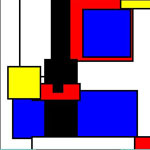
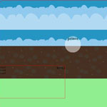

Group redesign of the Sharetea Website. My portion of the website was the "careers" page.
CSS-based animation created on the De Stigl Manifesto. 
Work-in-progress longscrolling website based on a princess fighting monsters in order to save a prince from a castle.
Illustrations
Illustration for the book, "We". Done with Illustrator.
Illustration of a cat. Done with pen and ink, Photoshop, and Illustrator.
Different designs for the object "qtip". Done in Illustrator.
Illustration done in Illustrator of a concert in San Francisco.